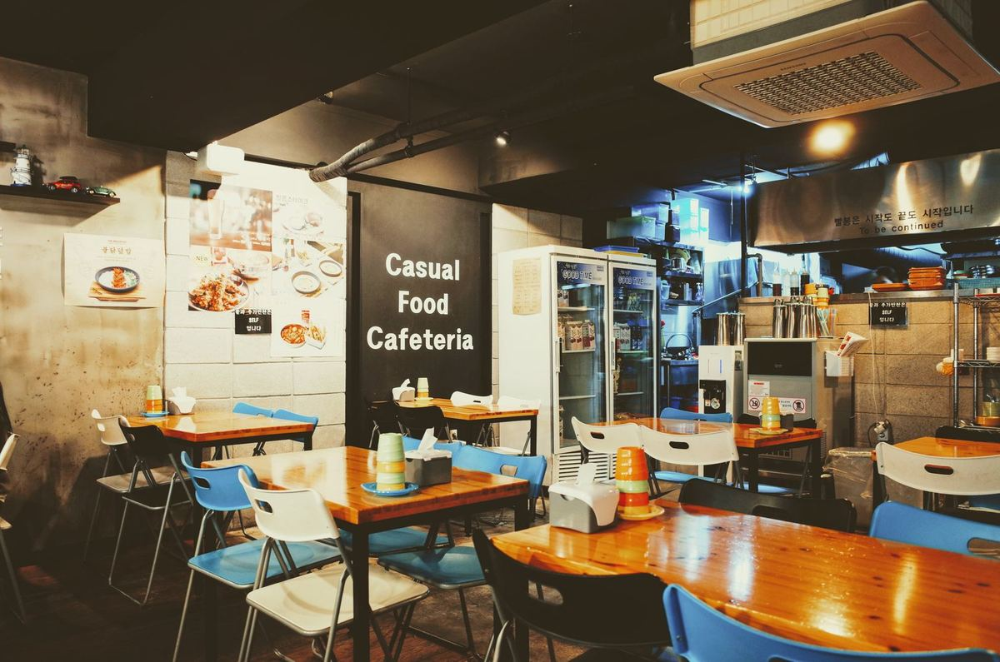
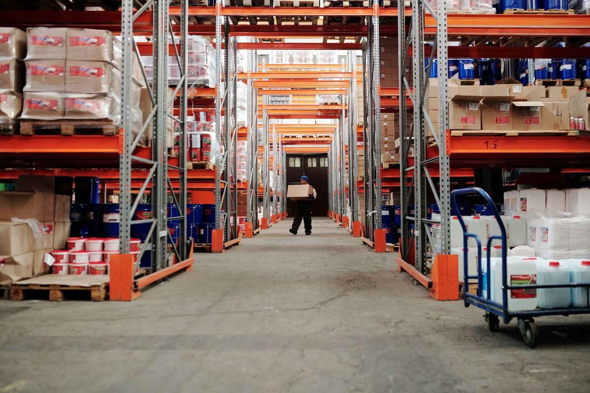

Konsultan operasional & manajer proyek dengan 9 tahun pengalaman di ritel F&B dan logistik. Spesialisasi: membangun SOP, menekan biaya operasional, dan memimpin tim lintas kota menyelesaikan proyek tepat waktu.
Saya percaya operasional yang baik terlihat dari datanya: biaya turun, waktu proses memendek, dan tim tidak lagi bergantung pada satu orang.
📍 Domisili: Sukoharjo, Jawa Tengah
🎓 S1 Teknik Industri — Universitas Sebelas Maret
🎓 S2 Magister Manajemen — lulus 2021
🗣️ Bahasa: Indonesia (native), Inggris (profesional)
📧 Kontak tercepat: WhatsApp (tombol di halaman ini)
Dari staf administrasi sampai memimpin operasional multi-outlet.
Mengawasi 5 outlet (210 karyawan). Menstandarkan SOP dapur & layanan, menurunkan food cost dari 38% ke 31%, dan membangun sistem audit internal bulanan.
Mengelola armada 14 kendaraan dan gudang 2.400 m². Ketepatan pengiriman naik dari 82% ke 97% setelah perombakan rute & jadwal muat.
Menyusun jadwal produksi 3 lini jahit dan mengendalikan stok bahan baku. Mengurangi lembur tak terencana sebesar 25% dalam tahun pertama.
Kombinasi keahlian teknis operasional dan kepemimpinan lapangan.
Detail studi kasus lengkap tersedia dalam CV PDF dan saat sesi diskusi.


S1 Teknik Industri (UNS, 2013–2017) · S2 Magister Manajemen (2021) · Sertifikasi: Project Management Fundamentals, Lean Six Sigma Yellow Belt, K3 Umum.
Mentor sukarela komunitas UMKM lokal untuk pencatatan stok sederhana, dan penulis buletin bulanan tentang operasional usaha kecil.
Referensi lengkap dengan kontak tersedia atas permintaan.
"Dimas satu-satunya manajer yang berani bilang 'target ini tidak realistis' sambil membawa data dan alternatif. Hasil akhirnya justru melampaui target revisi."
"Perombakan gudang yang dia pimpin menghemat biaya lembur kami belasan juta per bulan. Dokumentasinya rapi, mudah diteruskan ke tim."
"Cara dia melatih supervisor kami berbeda: bukan ceramah, tapi pendampingan di lapangan sampai kebiasaan baru terbentuk."
Saya membalas pesan WhatsApp pada hari kerja pukul 08.00–20.00 WIB. Untuk kebutuhan mendesak proyek berjalan, silakan sebutkan kata "URGENT" di awal pesan.